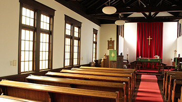
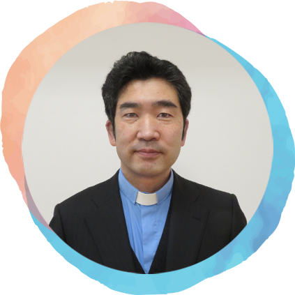

1942年広島生まれ。京大にて学んだ後、会社員・大学教員を経て京都市内に住み執筆等をしています。幼稚園では、長らく理事として2016年より理事長として園を支えてきました。これからもよりよい園を目指して頑張ります。
京都聖三一幼稚園は、日本聖公会の設立した平安女学院の教育研修施設として、1915年に同地の京都聖三一教会内に設立されました。1930年には、京都聖三一教会の移転とともに現在の地（聚楽廻中町）に移り、2018年には新園舎改築とともに幼稚園型認定こども園の認定を受け、今日にいたるまで100年以上の歴史を持つ幼稚園です。
私たちの幼稚園は、キリスト教の教えである”愛“と”豊かな心”を育む園児教育を基本方針としています。経験豊かな先生や、はつらつとした若い先生方まで多様な教員をそろえ、園児の皆さんお一人お一人を大切にしながら日々の養育に努めています。
また、園児の皆さんがのびのびと安全に過ごしていただけるよう図書や設備の充実など配慮しております。
これらの趣旨をご理解いただき、ぜひご来園いただきますようお願い申し上げます。
京都に生まれ京都で育ち、聖公会の幼稚園にて神様と出合いました。20歳で洗礼を受け、京都・札幌・大阪の幼稚園・大学教員としてキリスト教保育に従事の後、京都聖三一幼稚園に就任、2016年より園長として従事させていただいております。
聖三一幼稚園がお家の方と一緒に子どもにプレゼントしたいもの･･･
お母さんやお父さん、先生、そして何よりも神様が愛して下さって生まれたこの命は、かけがえの無いたった一つの大切な命である事、それは「あなたは愛されるために生まれたのよ。」「あなたの存在は、何よりも私達の宝ものなのよ。」と伝える事です。
入園してくれた子ども達の心にそっと寄り添い、真っ白な心に愛の種をぎゅ～っと植える事を大切にしています。愛は、形のないもの･･･目に見えないもの･･･。だから解りにくいし、無いようにも感じます。でも、心に育つ愛の種は必ず何よりも大きな力となり、子ども一人ひとりの人生を司っていく力となります。
愛されている事を知っている子どもは、自分を大切にできる･･･
愛されている事を知っている子どもは、自分と同じように人を大切にすることができる･･･
一つひとつの事を当たり前だと思わずに何時も感謝できるから、喜びも大きく大きく育ちます。何時も、必ず神様が側にいて守って下さる事をしっているから、勇気をもって挑戦する事ができます。失敗しても良いんです。又、やりなおしましょう。愛されている事を知っている力は、何よりも強い力です。
私達は何時までも子どもの手を繋いで歩いて行くことはできません。子ども達が、これからの人生を、幸せに豊かに生きていける知恵と勇気を育てましょう。困っている人がいたら手を差し伸べる事のできる優しくて強い心を育みましょう。子どもに愛を伝えることは、簡単な様で難しい事です。聖三一幼稚園でご一緒に、愛を伝える力を養っていきましょう。
「揺り籠を揺する手は、世界を揺する手」と言われる程、子育ては、世界中のどの仕事よりも偉大な技です。お家の方も、愛に満たされて共に歩めることを願っています。
| 名称 | 学校法人京都聖三一学園 聖三一幼稚園 幼稚園型認定こども園 |
|---|---|
| 理事長 | 西郡 晃雅 |
| 園長 | 松﨑 美幸 |
| 所在地 | 〒604-8403 京都府京都市中京区聚楽廻中町45番地の１ |
| 電話 | 075-841-3281 |
| FAX | 075-841-3274 |
※電話・FAXでのセールスはお断りしております。
| 1898年5月 | 京都聖三一教会発足 |
|---|---|
| 1915年4月 | 聖三一幼稚園開園 |
| 1916年10月 | 室町下立売に移転 |
| 1930年10月 | 聚楽廻中町に移転 |
| 1932年4月 | 聖三一幼稚園開園式 |
| 1978年2月 | 幼稚園園舎落成式 |
| 1978年2月 | 学校法人として認可 |
| 2018年3月 | 現園舎落成 |
| 2018年4月 | 幼稚園型認定こども園として認可 |
「聖公会（せいこうかい）」は、カンタベリー大主教を精神的指導者とするイングランド国教会から生れ、世界165ヵ国以上に広がる41の管区と5つの特別管区からなるキリスト教会です。日本支部として「日本聖公会」があり、立教大学や聖路加国際病院をはじめとする多くの社会機関の運営を行っております。

16世紀にローマ・カトリックから独立した英国国教会の流れを汲む日本聖公会に属するキリスト教会です。
京都市内では、日本聖公会桃山基督教会とともに和風を基調とした教会建築として知られており2015年4月に京都市の重要建造物に指定されました。

奈良県出身。神学校を卒業していくつかの教会やキリスト教施設の働きを経て、２０２３年４月より、聖三一幼稚園のチャプレンとなりました。京都聖三一教会と聖アグネス教会の牧師も兼務しています。
見えない神様のことを幼いうちから知ることはとても大きな恵みです。聖書のお話を通して神様のことをお伝えしていきたいと思います。そして、みんなが神様から愛されている存在であることを知り、自分を愛することはもちろん、他の人や生き物、また自然をも大切にするやさしい心を共に育てていきたいと思います。